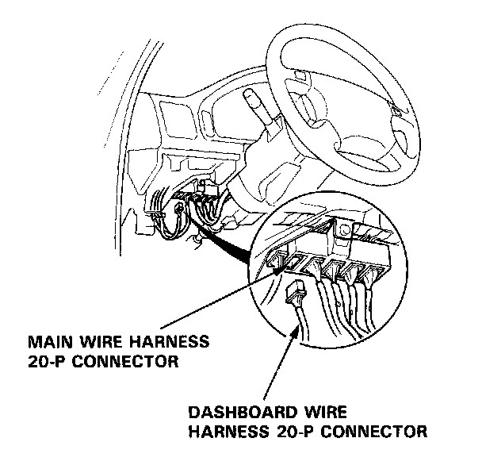
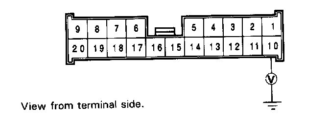
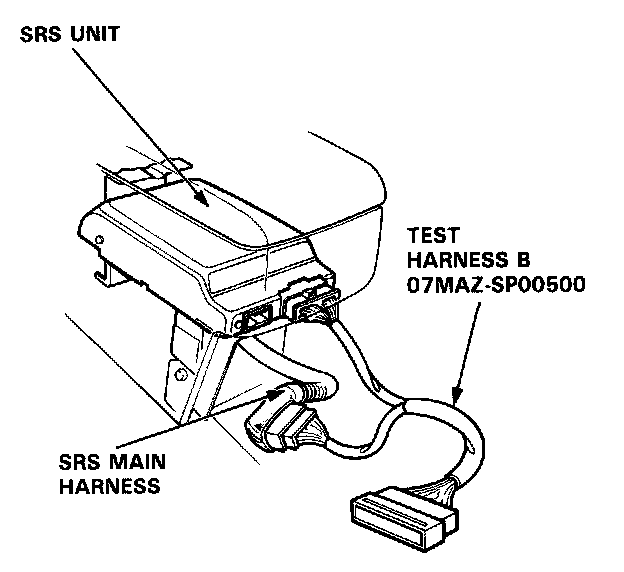
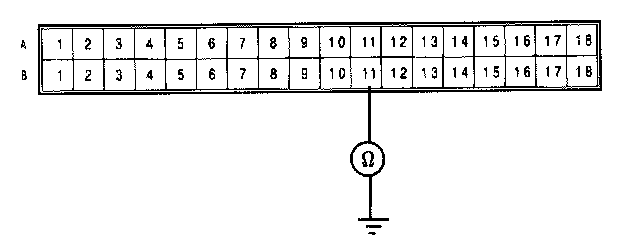
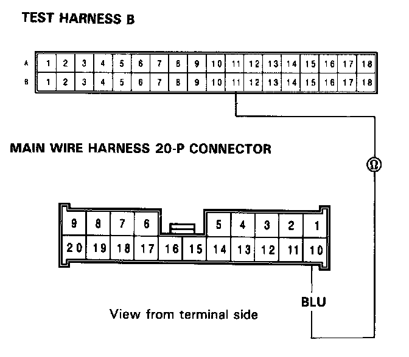
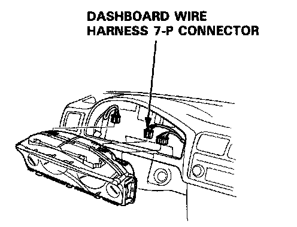
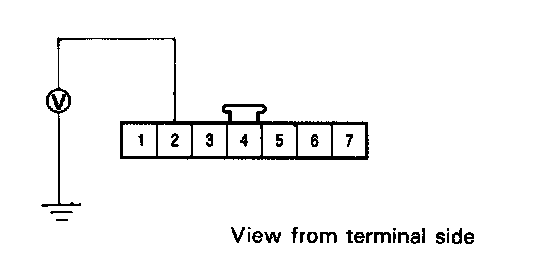

Failure Mode J
Mode J: Short or open in SRS indicator wire harness.
NOTE: The original radio has a coded theft protection circuit. Be sure to get the code number before disconnecting the battery cables.
1. Disconnect the dashboard wire harness 20-P connector from the main wire harness.

2. Measure the voltage between the No.10 terminal and body ground on the main wire harness half of the 20-P connector with the ignition switch ON.

- If voltage is more than 8.5V, go to step 8.
- If voltage is less than 8.5V, go to step 3.
3. Before disconnecting any part of the SRS wire harness, disconnect both the negative and positive battery cables. Then install the short connectors - refer to "Short Connector Installation" procedure.
4. Reconnect the battery positive cable and negative cable.
5. Connect Test Harness B between the SRS unit and the SRS main harness 18-P connector.

6. Check for continuity between the B11 terminal and body ground.

- If there is no continuity, go to step 7.
- If there is continuity, the SRS main harness (or the car main wire harness) is shorted. Replace the SRS main harness or repair the car main wire harness and recheck the voltages according to the chart in the "Indicator Stays On Continuously" procedure.
7. Check for continuity between the B11 terminal of the Test Harness B and the No.10 terminal of the main wire harness 20-P connector.

- If there is continuity, the SRS unit is faulty. Replace and recheck the voltages according to the chart in the "Indicator Stays On Continuously" procedure.
- If there is no continuity, the SRS main harness or the car main wire harness is open. Replace the SRS main harness or the car main wire harness and recheck the voltages according to the chart in the "Indicator Stays On Continuously" procedure.
8. Connect the dashboard wire harness 20-P connector to the main wire harness. Disconnect the dashboard wire harness 7-P connector from the gauge assembly.

9. Turn the ignition switch ON and wait for 6 seconds. Measure the voltage between the No.2 terminal and body ground.

- If voltage is more than 8.5V, the SRS indicator circuit is faulty (in the gauge assembly). Replace the gauge assembly and recheck the voltages according to the chart in the "Indicator Stays On Continuously" procedure.
- If voltage is less than 8.5V, the dashboard wire harness is faulty. Repair the open or short in the BLU wire of the dashboard wire harness and recheck the voltages according to the chart in the "Indicator Stays On Continuously" procedure.